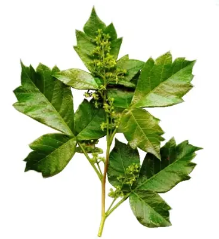

pranet · 出典付きの植物図鑑
Rhus dentata
Searsia dentata (Thunb.) F.A.Barkley · Anacardiaceae

Searsia dentata, the nana-berry (English), or nanabessie (Afrikaans), is a medium-sized, deciduous tree, reaching a height of about 5 metres and a spread of 4 metres, and with a tendency to scramble through and over neighbouring trees. It occurs naturally in almost the whole of South Africa except the Western and Northern Cape Provinces. Its habitat varies from sea level to the highlands of the Drakensberg. It is frost-hardy and should be planted in full sun. The strongly aromatic leaves are usually conspicuously toothed, though sometimes they may be only slightly toothed. The tree produces small, creamy-white flowers in masses, developing into small, flattened drupes (5-6mm) which turn red or orange when ripe and brown when dry. The ripe fruits are eaten by birds, while the foliage is food for the larvae of the pepper tree moth Bombycomorpha bifascia.
出典: Wikipedia (en): Searsia dentata · CC BY-SA 4.0
異名: Rhus acutidens Engl., Rhus dentata Thunb., Rhus grandidentata DC., Rhus micrantha Thunb., Rhus mollis E.Mey., Rhus parvifolia Harv., Rhus sonderi Engl., Toxicodendron acutidens Kuntze, Toxicodendron dentatum (Thunb.) Kuntze, Toxicodendron sonderi (Engl.) Kuntze
同定や利用は自己責任でお願いします。この図鑑だけを根拠に野生の植物を食べないでください。
出典
- 学名: World Flora Online Plant List 2026-06 · CC0 1.0
- 名前: Wikipedia の記事名と Wikidata · CC0 1.0（Wikidata）。記事名は事実
- 説明: Wikipedia (en): Searsia dentata · CC BY-SA 4.0
- 食用・毒性: World Checklist of Useful Plant Species (Diazgranados et al. 2020, RBG Kew) · CC BY 4.0
- 分布: World Checklist of Vascular Plants (WCVP), RBG Kew, version 2026-06-04 · CC BY 3.0
このページは pranet のデータから自動生成しています。コードは MIT、データは項目ごとのライセンス（説明）。